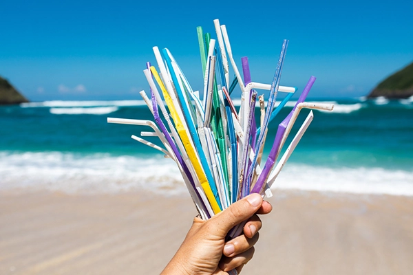
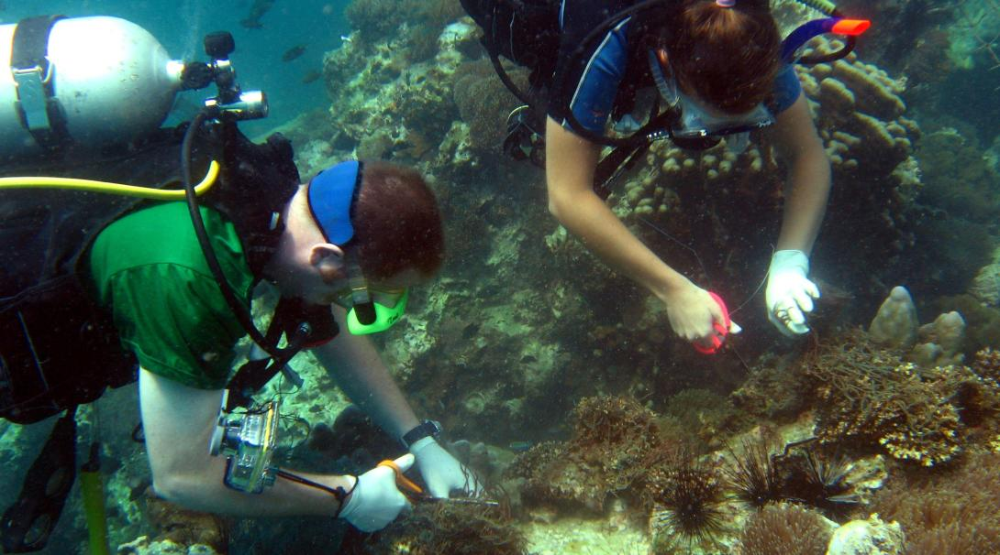

How We Can Help?
Simple actions for a healthier ocean
Ways to Make a Difference

Reducing Plastic Use
Minimize plastic waste by using reusable products and recycling.

Choosing Sustainable Seafood
Look for MSC-certified and dolphin-safe labels when buying seafood.

Supporting Marine Conservation
Donate, volunteer, or spread awareness about ocean conservation.
Eco-Friendly Tourism & Diving
Respect marine ecosystems while exploring the ocean. Avoid touching marine life, choose responsible tour operators, and never litter in the ocean.
Everyday Actions for Ocean Protection
- Use reusable bottles, bags, and straws.
- Properly dispose of waste to prevent ocean pollution.
- Reduce carbon footprint by using public transport and conserving energy.
Take Action
Want to make a difference? Volunteer, donate, or spread awareness!
Join the Movement